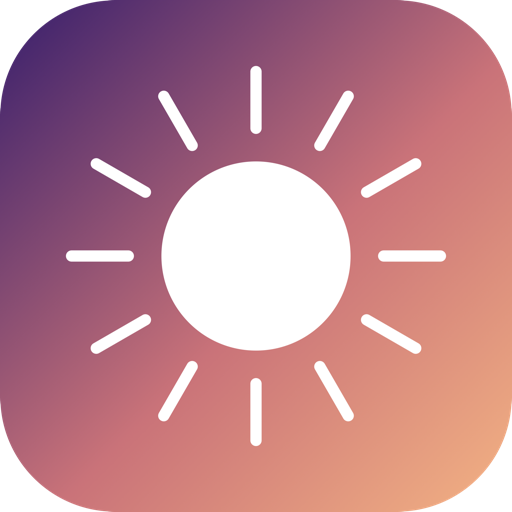

HDRHeic
Turn HDR JPEGs into 10-bit HDR HEIC — automatically.
Download for macOSmacOS 13 or later · Apple Silicon · free & open source
What it does
- ›Watches a folder and converts new HDR JPEGs to 10-bit Display P3 HEIC that keeps the HDR gain map — the same quality as Preview’s “HEIF 10-bit Maximum”.
- ›Runs on the hardware encoder, so it’s fast and light on the machine.
- ›Waits for the folder to settle before converting, and re-does a HEIC when the JPEG is newer (Never / Newer / Always).
- ›Native Apple frameworks only — no dependencies.
Install
- Download and unzip
HDRHeic.app.zip. - Move HDRHeic.app to your
Applicationsfolder. - First launch: right-click the app → Open → Open (needed once because the app isn’t notarized).
- In the window, set your folder and click Turn On to start the background watcher.
If macOS still refuses to open it, run:
xattr -dr com.apple.quarantine /Applications/HDRHeic.app